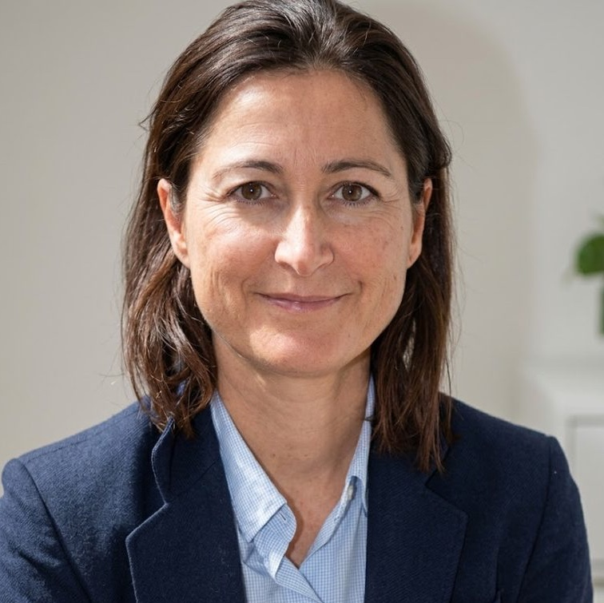
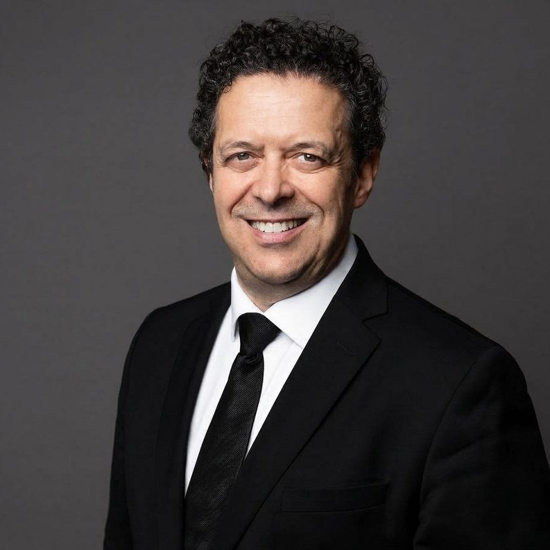
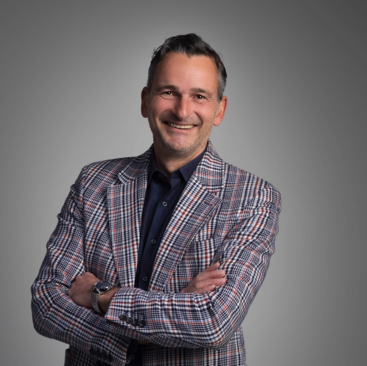

Avant cet appel, voici ce qui vous attend — étape par étape.
Pas de jargon. Deux minutes de lecture.
Votre premier échange sert à comprendre ce que vous avez vécu, et ce que vous vivez depuis.
On fait le point sur vos documents, sur qui doit vous indemniser, et sur les délais qui courent déjà sans que vous le sachiez.
À la fin de cet échange, vous saurez exactement où vous en êtes — et ce que vous pouvez faire, ou ne pas faire, en attendant.
Ce premier échange est offert.Constat, procès-verbal, certificats médicaux, arrêts de travail, justificatifs : chaque pièce compte.
Un procès-verbal incomplet ou un certificat mal rédigé peut coûter des mois de procédure. Votre avocat relit tout — et conteste si nécessaire.
À partir de là, c'est lui qui parle à l'assureur à votre place. Vous ne gérez plus ni courrier, ni relances : cette charge-là ne vous appartient plus.
« Votre vie est bouleversée et vous êtes perdu avec toutes ces procédures… C'est exactement là qu'un avocat expert prend tout son sens, afin de se battre pour vous et votre réparation intégrale. »
Maître Xavier DenisAvocat en réparation du dommage corporel
C'est le rendez-vous qui décide de presque toute votre indemnisation : une gêne absente du rapport de l'expert n'est presque jamais réparée.
Le médecin expert ne connaît de vous que votre dossier. Une pièce manquante, une douleur tue : le rapport vous sous-estime, sans que personne ne l'ait voulu.
Votre avocat, lui, ne laisse rien au hasard : il complète votre dossier pièce par pièce, vous fait accompagner d'un médecin-conseil — et provoque une contre-expertise si le rapport oublie des préjudices.

« L'expertise médicale est le moment où se joue votre indemnisation. De ce fait, nous accompagnons les victimes à chaque expertise. »
Maître Juliette Cochet-BarbuatAvocat en réparation du dommage corporel
Soins, perte de revenus, aide apportée par vos proches, ce que vous ne pouvez plus faire : chaque préjudice est évalué.
Votre avocat négocie. Si l'assureur conteste, il se battra pour votre réparation.
Et il vérifie l'offre finale, ligne par ligne, avant que vous ne signiez quoi que ce soit.

« Mieux vivre son handicap, c'est aussi se faire aider par un avocat. Comme je dis toujours : sans nous, c'est encore pire. »
Maître Olivier DescampsAvocat en réparation du dommage corporel

Et bien d'autres avocats experts en dommage corporel, dans toute la France.
Attention — un avocat payé uniquement à la commission, c'est illégal.
Les honoraires reposent sur un forfait modeste pour l'ouverture du dossier, et un pourcentage calculé sur l'indemnité obtenue.
Et si l'étude de votre dossier montre qu'il ne peut pas négocier une meilleure indemnité, votre avocat ne le prendra pas — et ne vous facturera rien.
→ Vérifiez si vous avez une protection juridique dans vos contrats. Elle peut couvrir tout ou partie des frais. Beaucoup de gens en ont une sans le savoir.
Non. La très grande majorité des dossiers se règle à l'amiable, sans jamais voir un tribunal — et pendant ce temps-là, vous vous concentrez sur votre santé.
La loi impose des délais à votre assureur : une première offre dans les 8 mois suivant l'accident, une offre définitive dans les 5 mois suivant votre consolidation. S'il tarde, il vous doit des intérêts.
Encore faut-il que quelqu'un les fasse respecter. C'est le rôle de votre avocat : faire avancer votre dossier, réclamer une avance bien avant le règlement final — et ne pas laisser l'assureur faire traîner.
Votre dossier est alors clos. Définitivement.
Ce n'est qu'une avance sur le règlement à venir.
Ce que vous ne dites pas ne sera pas réparé.
Quand votre avocat vous appellera, il vous posera des questions précises : dix minutes de préparation maintenant, et vos réponses seront prêtes.
0 document sur 6
Chaque pièce cochée, c'est du temps gagné pour votre dossier.
Quand votre avocat appellera, répondez :
ce premier échange est gratuit,
et il peut changer la suite de votre dossier.
Victime Conseil — mise en relation avec des avocats experts
en réparation du dommage corporel.